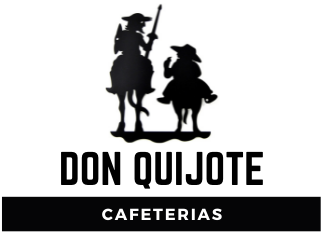
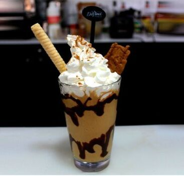
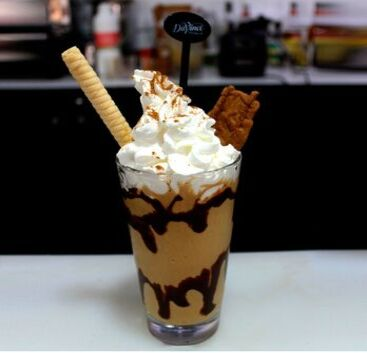

on Quijote cafeterias
Bienvenidos a Don Quijote cafeterias. Estamos aquí para ustedes. (Si estás visitando nos de un smartphone el menú de los secciones de la página está arriba). Si tienen dudas de compras, servicios en general, horarios o las medidas sanitarias durante ‘la nueva normalidad’, se pueden escribir aquí: info@donquijotecafeterias.com Estamos viviendo en un tiempo extraordinario, pero seguimos con nuestra misión. Que es servir la mejor taza de café posible en un ambiente bonito y relajado. Nacimos del deseo por hacer comunidad, basada en un comercio justo y sustentable, cuidando cada uno de los detalles, desde el productor y el grano hasta el barista y la taza. Amamos el buen café, y nos fascina lo que produce: las pláticas, las ideas, los lazos y los momentos. Buscamos conectar, crear y lograr. Queremos construir y ser parte del mundo en el que queremos vivir.
 
